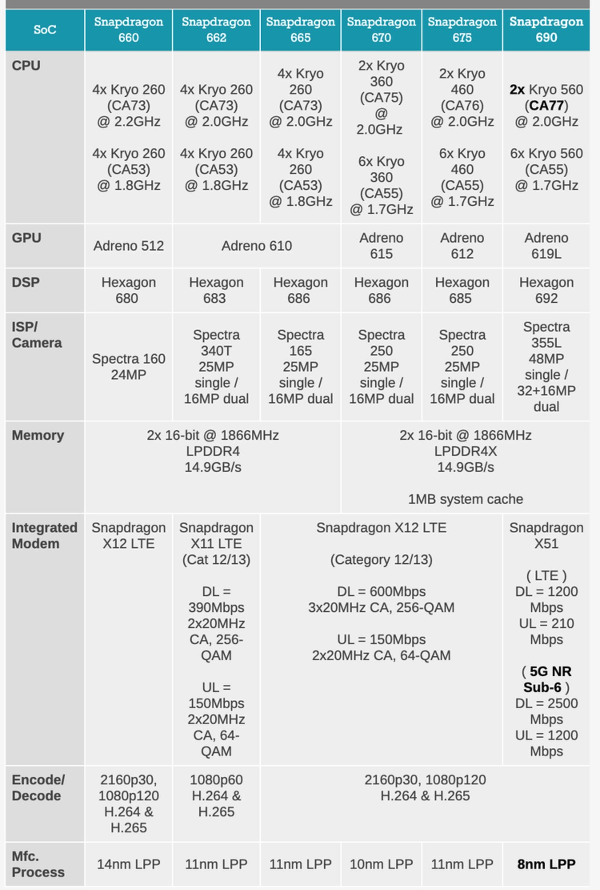

6月17日，高通开了场小型发布会，正式推出了新款芯片——骁龙690。从命名方式来看，这是一款面向中低端市场的手机处理器，但在具体的参数和细节上，也存在着一些“越级”的特性。
更重要的是，这款芯片的发布，意味着高通在5G手机普及潮中，放出了新的大招，投身于5G百元机的争夺战中。
骁龙690发布，高通补上5G短板,主要亮点：A77大核加持，首款6系5G芯片
骁龙690的升级点，基本可以分为两个维度：传统性能上的提升和对5G网络的支持。

核心参数方面，骁龙690的CPU部分依然延续了8核心设计，两颗大核为A77架构，主频2.0GHz；6颗小核则依然是A55架构，主频1.7GHz。GPU方面，骁龙690配备了Adreno 619L。按照官方说法，骁龙690 CPU性能提升了20%，GPU性能提升了60%。当然，这个数据是和骁龙675对比后得出的。
骁龙690的CPU性能提升，主要来源于大核从A76架构升级到了A77架构。不过，这款处理器依然只有两颗大核，很大程度上限制了性能的进一步提升。从目前的信息来看，骁龙690的CPU部分，大核领先于骁龙765G，但GPU方面则还是落后于765G。
根据安兔兔官方数据库，骁龙675 GPU性能跑分约为3.45万，提升60%的话，大概为5.5万，超过了骁龙710，但比骁龙730落后，和骁龙765相比更是有巨大差距。而且，制程方面，骁龙690没有用上最新的7nm工艺，采用的还是三星的8nm LPP。
由此我们可以看到，高通在骁龙690上的刀法依然十分精准，CPU和GPU上的性能提升控制得十分小心。作为面向中低端市场的芯片，骁龙690无法威胁到自家的中高端芯片，更不用说旗舰芯片了。当然，它的整体性能，满足一般用户的轻度日常使用需求，问题不大。
采用高通芯片的5G手机，给人的感觉还是主打中高端市场，不管是去年的骁龙855+X50还是今年的骁龙865+X55组合，价格都不便宜。即使是面向中端市场的骁龙765G芯片，手机售价基本都在2000元以上。
而骁龙690是首款支持5G的高通6系芯片，就是冲着百元机和千元机去的。骁龙690配备了X51集成式基带，支持5G Sub 6频段，最高理论下行速率2.5Gbps、上行速率660Mbps，满足日常网络需求问题不大。当然，它不支持毫米波，对美国用户可能会有影响，但对国内用户基本没影响。
受限于定位，骁龙690是不支持WiFi 6的，不过官方表示它支持WiFi 6的部分特性。综合来看，骁龙690网络方面的升级是它作为一款中低端芯片的主要卖点，承担着高通在百元5G手机市场的普及任务。